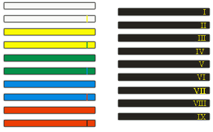

W Taekwondo stopnie możemy podzielić na: uczniowskie KUP i mistrzowskie DAN. Tak, jak jest ukazane to na obrazku, przygoda w Taekwondo zaczyna się od białego pasa, który jest symbolem niewinności, niewiedzy.
Po zdaniu egzaminu adept otrzymuje pas żółty czyli 8 KUP, ten stopień oznacza natomiast kiełkującą roślinę.
Następnie w kolejności mamy pas zielony, który jest metaforą intensywnego rozwoju rośliny i wiąże się z rozwojem umiejętności ucznia.
Niebieski pas symbolizuje niebo, do którego dąży rosnąca roślina, czerwony natomiast oznacza niebezpieczeństwo związane z wysokimi zdolnościami.
Czarny pas jest przeciwieństwem bieli, symbolizuje dojrzałość, ale wbrew myśleniu, że jest to już najwyższy możliwy poziom, czarny pas również jest dopiero kamieniem milowym, a adept dowiaduje się, że nauka będzie trwała całe życie.
Do piątego DANA osoba trenująca Taekwondo zdobywa je za swoje umiejętności, jednak później są wręczane jedynie za wkład w rozwój Sztuki walki. Natomiast dziesiątego dana nie przydziela się, gdyż należy on jedynie do założyciela Taekwondo generała Choi Hong Hi
Oczywiście same umiejętności fizyczne nie są wystarczające, by otrzymać dany stopień, potrzebna jest również wiedza na temat samej sztuki, czy nazw technik